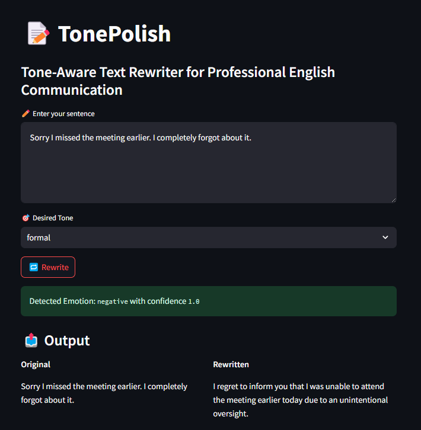
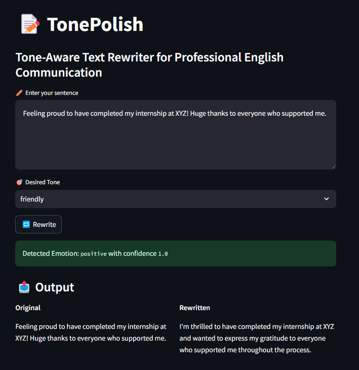

Screenshots


Motivation
Writing professionally can be tricky — especially when trying to express emotions like confidence without sounding arrogant. This is even harder for non-native speakers. TonePolish solves that by offering real-time tone-aware rewriting, powered by open-source LLMs.
What It Does
- Analyzes the emotional tone of your original sentence.
- Rewrites the input sentence in your desired tone: Friendly, Confident, Humble, or Formal.
- Outputs the original vs. rewritten text side-by-side.